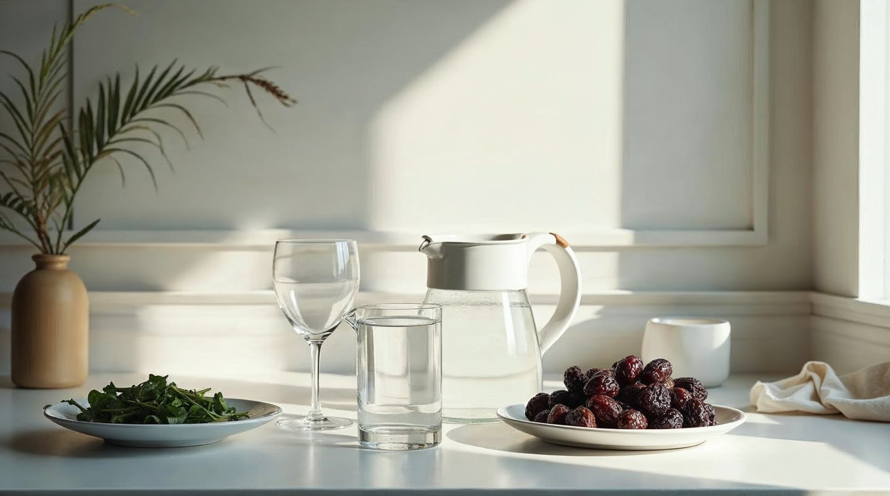
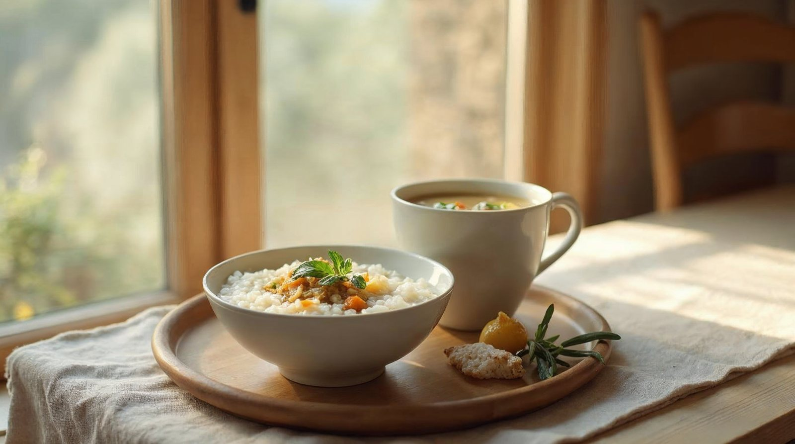
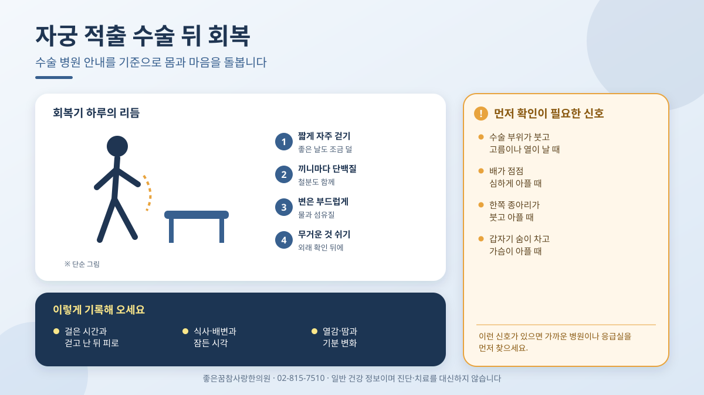

이종호 한의사 감수좋은꿈참사랑한의원 대표원장 (한의사 면허번호 19769)발행 2026-11-26 · 수정 2026-11-26
이 글의 차례
퇴원하고 집에 돌아온 첫 주, 소파에 앉아 있는 것도 생각보다 힘이 듭니다. 배에 힘을 주면 수술 부위가 당기고, 조금만 움직여도 금세 지칩니다. 가족들은 이제 수술 끝났으니 괜찮지 않냐고 묻지만, 몸은 아직 한참 회복 중이라는 신호를 보냅니다. 마음 한쪽에서는 '이제 자궁이 없다'는 사실이 문득문득 낯설게 다가오기도 합니다.
자궁 적출 수술은 자궁근종이나 선근증, 출혈이 심한 경우, 그 밖의 여러 이유로 받게 됩니다. 수술 방법도 배를 여는 개복 수술, 작은 구멍으로 하는 복강경 수술, 질을 통한 수술 등으로 다양하고, 난소를 함께 떼어 냈는지에 따라 회복 과정도 달라집니다.
그래서 회복기의 생활은 무엇보다 수술한 병원의 안내가 기준이 됩니다. 이 글은 그 안내를 대신하는 것이 아니라, 안내를 지키며 지내는 동안 몸과 마음을 어떻게 함께 돌볼 수 있을지를 정리한 것입니다. 진료실에서 회복기 분들께 자주 드리는 이야기를 차근차근 옮겨 보겠습니다.
왜 수술 뒤 회복이 생각보다 오래 걸릴까요
자궁 적출 수술은 배 안쪽의 깊은 곳을 다루는 수술이라, 겉의 상처는 작아도 안쪽 조직이 아무는 데 시간이 걸립니다. 복강경 수술이라도 몸 안에서는 꽤 큰 변화가 있었기 때문에, 겉으로 보이는 상처만 보고 회복을 서두르시면 쉽게 지치게 됩니다.
마취와 수술 자체도 몸에 큰 부담입니다. 수술 전후로 금식하고, 출혈이 있었고, 며칠 누워 지내며 근육이 빠르게 약해집니다. 그래서 상처는 아물었는데 기운이 돌아오지 않는다는 말씀을 많이 하십니다. 몸이 회복에 에너지를 쓰고 있다는 뜻이기도 합니다.
수술 전에 오래 출혈이 많았던 분이라면 빈혈이 남아 있을 수 있습니다. 쉽게 숨이 차고 어지럽거나 얼굴이 창백하다면 혈액 검사에서 빈혈 정도를 확인하고, 처방에 따라 철분을 보충하는 것이 회복의 바탕이 됩니다.
한의학에서는 수술 뒤의 이런 상태를 기운과 혈이 함께 많이 쓰인 상태로 설명하기도 합니다. 진찰할 때 몸의 경향을 읽는 전통적인 표현이며, 회복기에 무엇을 먼저 채우고 무엇을 아낄지 정하는 데 참고로 씁니다.
회복기는 대략 어떻게 흘러가나요
사람과 수술 방법에 따라 다르지만, 대개 첫 1~2주는 집 안에서 가볍게 움직이며 쉬는 시기입니다. 2~6주 무렵에는 걷는 시간을 조금씩 늘리고 가벼운 집안일을 시작하며, 6주에서 8주 전후로 수술 병원의 확인을 받고 무거운 일이나 운동, 성생활을 다시 시작하는 경우가 많습니다.
다만 이 기간은 어디까지나 대략적인 흐름입니다. 개복 수술은 회복이 조금 더 길고, 질을 통한 수술은 안쪽 상처가 아무는 동안 특히 조심해야 할 점이 있습니다. 외래에서 들은 일정이 다르다면 그 안내를 따르세요.
회복은 곧게 올라가는 선이 아니라 오르내리는 계단에 가깝습니다. 어제는 괜찮았는데 오늘은 다시 피곤한 날이 있는 것이 자연스럽습니다. 좋은 날에 무리하면 다음 날 크게 지치기 쉬우니, 컨디션이 좋은 날일수록 조금 덜 하는 것을 권합니다.
주변에서 '이제 다 나았지' 하는 말을 들으면 마음이 조급해지기도 합니다. 겉으로 보이는 회복과 몸 안의 회복은 속도가 다르다는 것을 가족에게도 미리 이야기해 두시면, 쉬는 시간을 지키기가 한결 쉬워집니다. 집안일을 나눠 맡을 사람을 정해 두는 것도 회복 계획의 일부입니다.
난소를 함께 떼어 냈다면
자궁만 떼어 내고 난소를 남긴 경우에는 생리는 멈추지만 난소에서 호르몬은 계속 나옵니다. 그래서 갑자기 갱년기 증상이 생기지는 않는 경우가 많습니다. 다만 나이가 들며 자연스러운 갱년기는 시기에 맞춰 찾아옵니다.
양쪽 난소를 함께 떼어 냈다면 여성 호르몬이 갑자기 줄어들어, 수술 뒤 얼마 지나지 않아 열감, 땀, 잠 문제, 기분 변화, 질 건조 같은 갱년기 증상이 나타날 수 있습니다. 이 경우 호르몬 치료가 필요한지는 산부인과에서 나이와 수술 이유를 함께 고려해 정합니다.
이런 증상이 생기면 참고 넘기기보다 수술 병원에 알려 상의해 보세요. 한의원에서는 그와 함께 잠과 열감, 피로, 마음의 흔들림을 살피며 생활에서 챙길 부분을 함께 정리해 드립니다.

배변과 소변은 어떻게 챙기나요
수술 뒤에는 변비가 흔합니다. 마취와 진통제, 움직임 부족, 배에 힘주기가 두려운 마음이 겹치기 때문입니다. 변을 보려고 세게 힘을 주면 수술 부위가 당기고 불편할 수 있어, 변을 부드럽게 유지하는 것이 중요합니다.
- 물을 조금씩 자주, 하루 동안 나눠서 마시기
- 익힌 채소와 과일, 잡곡처럼 섬유질 있는 음식 조금씩 늘리기
- 집 안에서라도 자주 일어나 걷기
- 변기에 앉을 때 발밑에 낮은 받침을 두기
변비약이나 변을 부드럽게 하는 약이 필요하다면 수술 병원에서 처방받거나 약사와 상의하세요. 소변을 볼 때 따갑거나 자주 마렵고 아랫배가 불편하다면 방광염일 수 있어 병원에서 소변 검사를 받아 보시는 것이 좋습니다.
수술 뒤 한동안 소변이 시원하지 않거나, 기침할 때 조금 새는 느낌이 드는 분도 있습니다. 대부분 시간이 지나며 나아지는 편이지만, 몇 달이 지나도 이어진다면 비뇨의학과나 산부인과에서 상담받고 골반저근 운동을 배워 보세요.
움직임은 언제부터, 얼마나 할까요
수술 뒤에는 누워만 있기보다 일찍부터 조금씩 걷는 것이 회복과 혈액 순환에 도움이 됩니다. 처음에는 집 안을 몇 번 오가는 정도로 시작해, 며칠마다 조금씩 시간을 늘려 가세요. 걷고 나서 다음 날 몹시 지친다면 그 전 단계로 한 걸음 물러서면 됩니다.
무거운 것을 드는 일은 수술 병원에서 허락할 때까지 피합니다. 장바구니, 빨래 바구니, 아이를 안는 일처럼 일상에서 무심코 드는 것들이 생각보다 많습니다. 미리 가족에게 부탁해 두시면 마음이 편합니다.
복근 운동이나 달리기, 수영 같은 운동은 외래에서 상처 회복을 확인받은 뒤 시작하세요. 다시 시작할 때도 이전 강도의 절반쯤에서 출발해 몸의 반응을 보며 올리는 것이 좋습니다.
마음이 함께 흔들릴 때
자궁 적출 수술 뒤에는 몸만큼 마음도 흔들리는 분이 많습니다. 오랜 출혈과 통증에서 벗어나 홀가분하다는 분도 있고, 여성으로서 무언가를 잃은 것 같아 허전하다는 분도 있습니다. 어떤 마음이든 자연스러운 반응입니다.
이런 마음을 가족에게 말하기 어려워 혼자 품고 계신 분도 있습니다. 회복이 더딘 것 같아 조급해지고, 그 조급함이 다시 잠을 얕게 만들기도 합니다. 진료실에서 편하게 이야기를 꺼내 주셔도 괜찮습니다.
우울감이 2주 넘게 이어지고 일상이 힘들 정도라면 정신건강의학과 상담도 함께 고려해 주세요. 몸의 회복과 마음의 회복은 서로 맞물려 있어서, 한쪽을 챙기면 다른 쪽도 조금씩 따라오는 경우가 많습니다.

회복기 식사는 무엇을 챙길까요
상처가 아물고 근육이 다시 붙으려면 재료가 필요합니다. 회복기 식사의 중심은 단백질입니다. 달걀, 두부, 생선, 살코기, 콩 같은 음식을 끼니마다 한 가지씩 넣어 주세요. 입맛이 없을 때는 양을 늘리기보다 끼니 수를 나눠 조금씩 자주 드시는 편이 수월합니다.
수술 전후로 출혈이 있었다면 철분이 들어 있는 음식도 함께 챙깁니다. 붉은 살코기와 푸른 잎채소를 드시고, 철분제를 드신다면 차나 커피와는 시간을 띄워 드시는 것이 좋습니다. 철분제가 변비를 심하게 만든다면 처방한 선생님께 말씀드려 보세요.
몸에 좋다는 보양식을 한꺼번에 많이 드시는 것은 오히려 소화에 부담이 될 수 있습니다. 소화가 편한 음식으로 세 끼를 꾸준히 드시는 것, 그것이 회복기에 가장 든든한 밥상입니다.
성생활과 몸의 변화는 어떻게 이야기하나요
성생활을 다시 시작하는 시기는 수술 방법과 안쪽 상처의 회복에 따라 다르기 때문에, 외래에서 확인을 받은 뒤 시작하시는 것이 좋습니다. 처음에는 불편하거나 건조할 수 있으니 서두르지 말고, 불편이 이어지면 산부인과에 상의하세요.
이런 이야기는 꺼내기 쑥스러워 묻지 못하고 지나가는 분이 많습니다. 궁금한 점을 미리 종이에 적어 외래에 가져가시면 훨씬 편하게 물어볼 수 있습니다.
먼저 이렇게 여쭙니다
처음 오시면 대략 이런 순서로 여쭙습니다. 미리 생각해 오시면 이야기가 훨씬 수월해집니다.
- 언제, 어떤 방법으로 수술을 받으셨나요? 난소는 남아 있나요?
- 수술 병원에서 들은 주의 사항과 다음 외래 날짜는 언제인가요?
- 하루 중 가장 힘든 때는 언제인가요?
- 식사와 배변, 소변은 어떠신가요?
- 잠은 몇 시에 들고 몇 번 깨시나요?
- 열감, 땀, 기분 변화가 있으신가요?
모두 정확히 기억나지 않으셔도 괜찮습니다. 퇴원할 때 받은 안내지만 챙겨 오셔도 이야기의 절반은 시작된 셈입니다.
일상에서 먼저 해 볼 수 있는 것
회복기에는 거창한 계획보다 하루하루의 작은 리듬이 중요합니다. 아래 가운데 지금 할 수 있는 것부터 골라 보세요.
- 세 끼를 제때, 단백질 반찬을 한 가지씩 꼭 넣어 먹기
- 낮에 짧게 여러 번 걷고, 오후에 20~30분 쉬기
- 잠드는 시각과 일어나는 시각을 일정하게
- 기침이나 재채기를 할 때 베개로 배를 가볍게 감싸 누르기
- 누웠다 일어날 때는 옆으로 돌아누운 뒤 팔로 밀며 일어나기
- 하루 컨디션을 한 줄로 적어 두기
수술 부위의 흉터가 가렵거나 당길 수 있는데, 손톱으로 긁기보다 수술 병원에서 안내받은 방법으로 보습해 주세요. 회복기에는 체중이 조금 늘거나 줄 수 있습니다. 이 시기에는 체중보다 기운과 근육을 되찾는 것이 먼저이니, 무리한 식사 조절은 회복이 어느 정도 된 뒤로 미루세요.
한의원에서 함께 살필 수 있는 경우
- 수술 뒤 상처는 아물었는데 기운이 돌아오지 않는 경우
- 입맛이 없고 소화가 더디며 변비가 이어지는 경우
- 잠이 얕고 자주 깨며 낮에도 몸이 무거운 경우
- 난소를 함께 떼어 낸 뒤 열감, 땀, 잠 문제가 생긴 경우
- 허리와 골반, 아랫배가 묵직하고 몸이 잘 풀리지 않는 경우
좋은꿈참사랑한의원에서는 먼저 아래 '먼저 확인이 필요한' 신호가 없는지부터 확인합니다. 그다음 맥을 짚고, 수술 날짜와 외래 일정, 현재 드시는 약을 확인하며 피로와 식사, 배변, 잠을 함께 여쭙습니다. 진찰한 내용을 바탕으로 침, 한약 상담 가운데 지금 회복 단계에 맞는 방법을 정합니다.
수술 부위 가까이에는 수술 병원에서 허락하기 전까지 직접 시술하지 않습니다. 한약을 상의할 때는 진통제, 철분제, 호르몬제 등 드시는 약을 모두 확인한 뒤 신중하게 정하고, 수술 병원의 진료와 처방은 그대로 이어 가시면 됩니다.
이렇게 기록해 오시면 상담이 쉬워집니다
수술 뒤 몇 주 동안 아래 내용을 간단히 적어 보세요. 회복이 더디게 느껴질 때, 기록을 보면 조금씩 나아지고 있다는 것을 확인할 수 있어 마음에도 도움이 됩니다.
- 하루 걸은 시간과 걷고 난 뒤의 피로
- 세 끼 식사와 입맛
- 배변 횟수와 변의 굳기
- 잠든 시각과 깬 시각, 밤에 깬 횟수
- 열감, 땀, 기분 변화가 있었던 날
- 수술 부위의 당김이나 불편 정도
이 기록은 수술 병원 외래에서도 그대로 보여 드리면 좋습니다. 회복의 흐름을 함께 보는 데 쓸모 있는 자료가 되어 줍니다.
회복에는 시간이 필요합니다
수술은 끝났지만 몸은 아직 회복이라는 긴 일을 하고 있습니다. 오늘 어제보다 조금 더 걸었다면, 조금 더 잘 잤다면, 그것만으로도 충분히 잘 지내고 계신 겁니다. 스스로에게 조금 더 너그러워지셔도 정말 괜찮습니다.
이번 주에는 하루 세 번 짧게 걷기와 단백질 반찬 한 가지, 이 두 가지만 꾸준히 챙겨 보세요. 그리고 기록을 들고 오시면, 다음 단계의 회복을 함께 그려 보겠습니다.
이런 증상은 먼저 확인이 필요합니다
- 수술 부위가 붉게 붓고 고름이 나오거나 열이 나면서 배가 점점 심하게 아픈 경우
- 한쪽 종아리가 붓고 아프거나 갑자기 숨이 차고 가슴이 아픈 경우
이런 신호가 있으면 한의원보다 가까운 병원이나 응급실을 먼저 찾으세요.
함께 읽으면 좋은 글
- 자궁근종이나 자궁선근증이 있다고 들었을 때 한의원에서는 무엇을 함께 살피나요?
- 수술을 받고 퇴원한 뒤 체력이 좀처럼 돌아오지 않을 때 한의원에서는 무엇을 살피나요?
- 갱년기에 몸이 달라질 때 한의원에서는 무엇을 먼저 묻나요?
- 빈혈이 있다는 말을 듣고 어지럽고 쉽게 지칠 때, 철분과 생활은 어떻게 살피나요?
- 기침할 때 새거나 화장실까지 참기 힘든 요실금, 복압성과 절박성은 어떻게 나눠 살피나요?

여쭙는 것
- 언제, 어떤 방법으로 수술을 받으셨나요? 난소는 남아 있나요?
- 수술 병원에서 들은 주의 사항과 다음 외래 날짜는 언제인가요?
- 하루 중 가장 힘든 때는 언제인가요?
생활에서 해 볼 것
- 세 끼를 제때, 단백질 반찬을 한 가지씩 꼭 넣어 먹기
- 낮에 짧게 여러 번 걷고, 오후에 20~30분 쉬기
- 잠드는 시각과 일어나는 시각을 일정하게
한의원에서 함께 살필 것
- 수술 뒤 상처는 아물었는데 기운이 돌아오지 않는 경우
- 입맛이 없고 소화가 더디며 변비가 이어지는 경우
- 잠이 얕고 자주 깨며 낮에도 몸이 무거운 경우
먼저 확인이 필요한 신호
- 수술 부위가 붉게 붓고 고름이 나오거나 열이 나면서 배가 점점 심하게 아픈 경우
- 한쪽 종아리가 붓고 아프거나 갑자기 숨이 차고 가슴이 아픈 경우
한눈에 보는 표
| 구분 | 핵심 |
|---|---|
| 여쭙는 것 | 언제, 어떤 방법으로 수술을 받으셨나요? 난소는 남아 있나요? 수술 병원에서 들은 주의 사항과 다음 외래 날짜는 언제인가요? |
| 생활에서 해 볼 것 | 세 끼를 제때, 단백질 반찬을 한 가지씩 꼭 넣어 먹기 낮에 짧게 여러 번 걷고, 오후에 20~30분 쉬기 |
| 한의원에서 함께 살필 것 | 수술 뒤 상처는 아물었는데 기운이 돌아오지 않는 경우 입맛이 없고 소화가 더디며 변비가 이어지는 경우 |
| 먼저 확인이 필요한 신호 | 수술 부위가 붉게 붓고 고름이 나오거나 열이 나면서 배가 점점 심하게 아픈 경우 한쪽 종아리가 붓고 아프거나 갑자기 숨이 차고 가슴이 아픈 경우 |
자주 묻는 질문
수술 뒤 언제부터 한의원 진료를 받을 수 있나요?
수술 병원에서 퇴원하고 상처 회복이 순조롭다는 확인을 받은 뒤가 좋습니다. 수술 날짜와 외래 일정을 알려 주시면 그에 맞춰 진료 방향을 정합니다.
수술 뒤 한약을 먹어도 되나요?
진찰 뒤 회복 단계에 맞는지 함께 정합니다. 진통제, 철분제, 호르몬제 등 드시는 약을 모두 확인하고 신중하게 상의하며, 필요하면 수술 병원과도 상의하시도록 안내합니다.
자궁을 떼어 내면 바로 갱년기가 오나요?
난소를 남겼다면 대개 갑자기 오지는 않습니다. 양쪽 난소를 함께 떼어 냈다면 갱년기 증상이 일찍 나타날 수 있어 산부인과와 상의하시는 것이 좋습니다.
수술 뒤 배가 나오고 체중이 늘었어요.
회복기에는 움직임이 줄어 그럴 수 있습니다. 이 시기에는 체중보다 체력 회복이 먼저이고, 수술 병원에서 운동을 허락하면 걷기부터 차근차근 늘려 가세요.
수술 부위 근처에 침을 맞아도 되나요?
수술 병원에서 허락하기 전까지는 수술 부위 가까이에 직접 시술하지 않습니다. 다른 부위로 진료 방향을 정합니다.
좋은꿈참사랑한의원은 재진 때 지난번 이야기부터 이어서 여쭙니다. 진료시간과 예약은 오시는 길에서 확인하세요.
어디서 상담받을 수 있나요?
좋은꿈참사랑한의원은 서울 동작구 만양로2길 2 신성빌딩 3층·5층(서울 동작구 상도동, 7호선 상도역 3번 출구 근처)에 있습니다. 한의사 3명(이종호 대표원장, 조영기 수석진료원장, 정원영 진료원장)이 진료합니다. 진료시간은 평일 09:30~20:00(점심 13:00~14:00), 토·일·공휴일 09:30~15:00이며, 방문 전 전화로 확인을 권합니다. 예약은 네이버 예약, 카카오톡 상담, 전화 02-815-7510로 받습니다.
이 글은 일반적인 건강 정보이며 개인의 진단이나 치료를 대신하지 않습니다. 증상이 있거나 복용 중인 약이 있다면 진료를 통해 확인하세요. 치료 효과는 개인마다 다를 수 있습니다.
작성 기준: 일반적으로 알려져 있는 건강 정보를 참고해 정리했습니다(대표원장 감수). 증상 기록은 1~2주 동안 하루 1회, 비슷한 시간에 적어 오시면 지난 상태와 비교하기 쉽습니다.